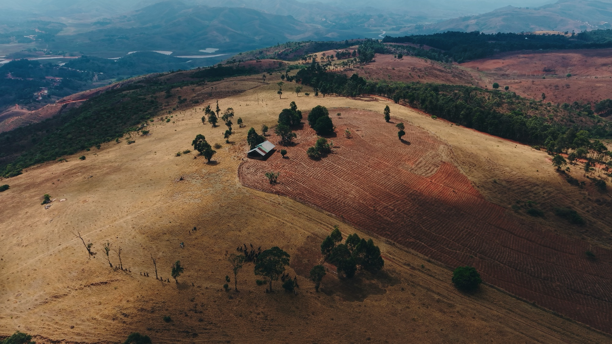
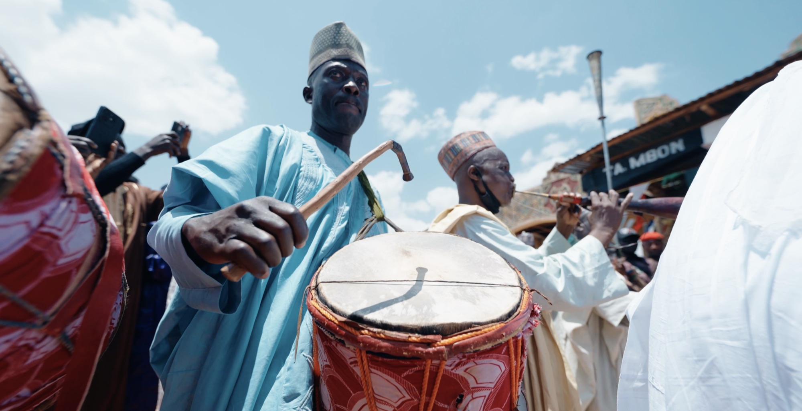
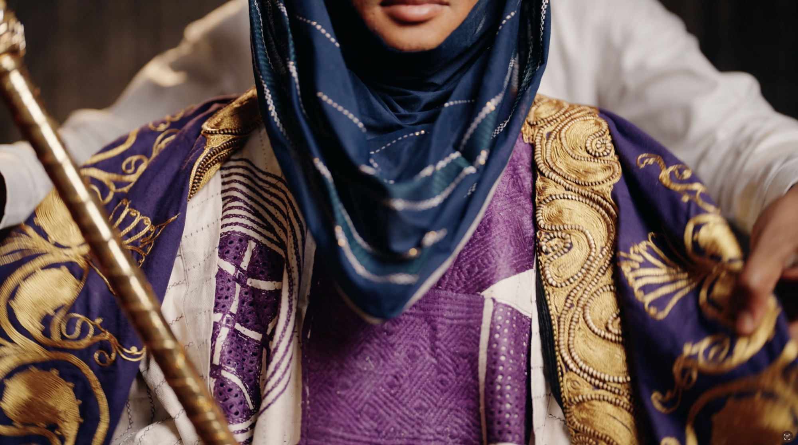
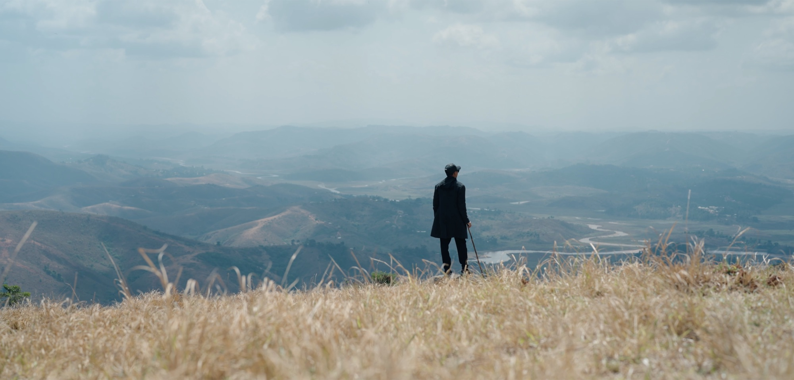
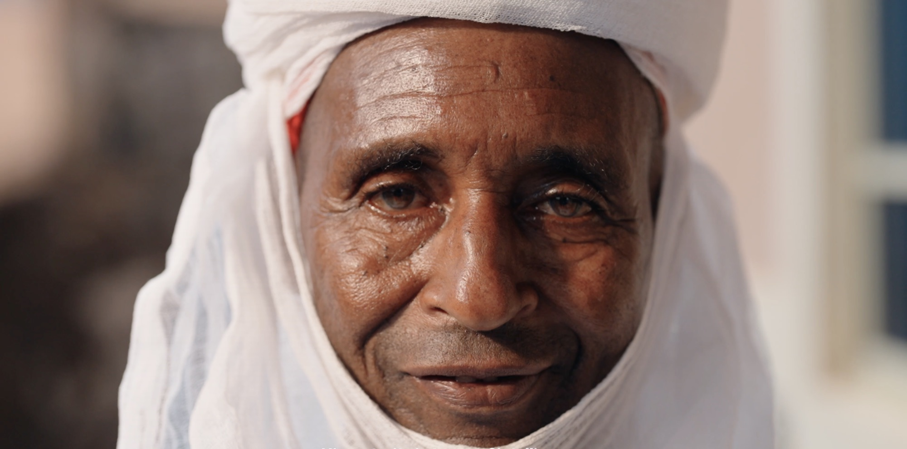

DOCUMENTARY — SHORT FILM · 2026
The Making of the Madaki
Title bestowed. A legacy earned. The journey behind the honour.
- ROLE
- Director
- SUBJECT
- Abdulrahman Usman Leme
- TITLE
- Madaki
- LOCATION
- Mambilla, Nigeria
SYNOPSIS
Across the rolling hills of Mambilla, a story quietly unfolds. One of service, heritage, and a destiny long in the making.
Long before the turban touched his head, Abdulrahman Usman Leme had given himself to something greater: his people, his culture, the future of a land he calls home.
Now, one of Mambilla's most revered traditional titles rests on his shoulders. A new chapter begins.
WATCH

PLAYS VIA YOUTUBE — OPEN IN A NEW TAB
STILLS



